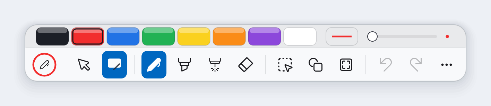
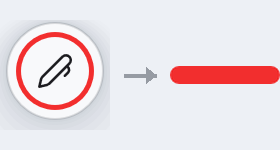
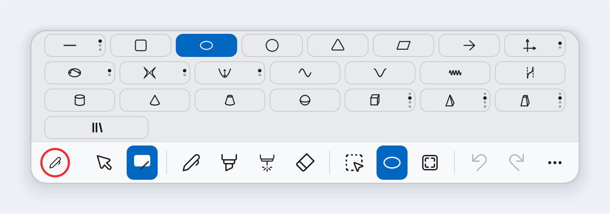
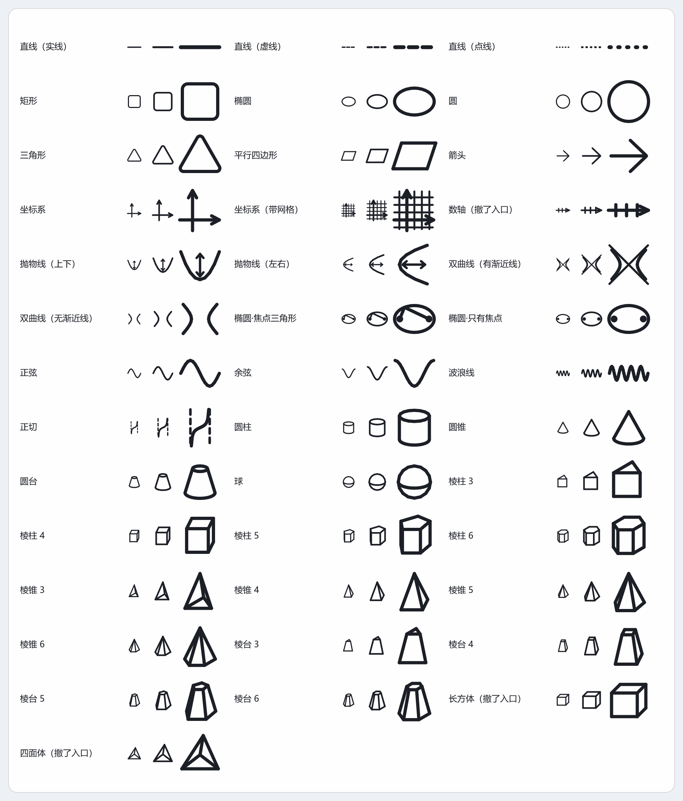
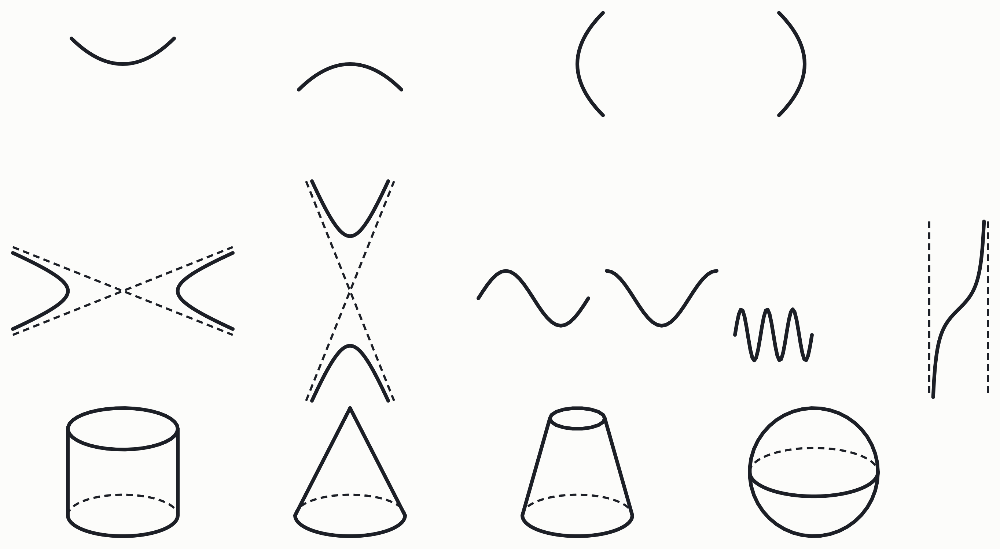
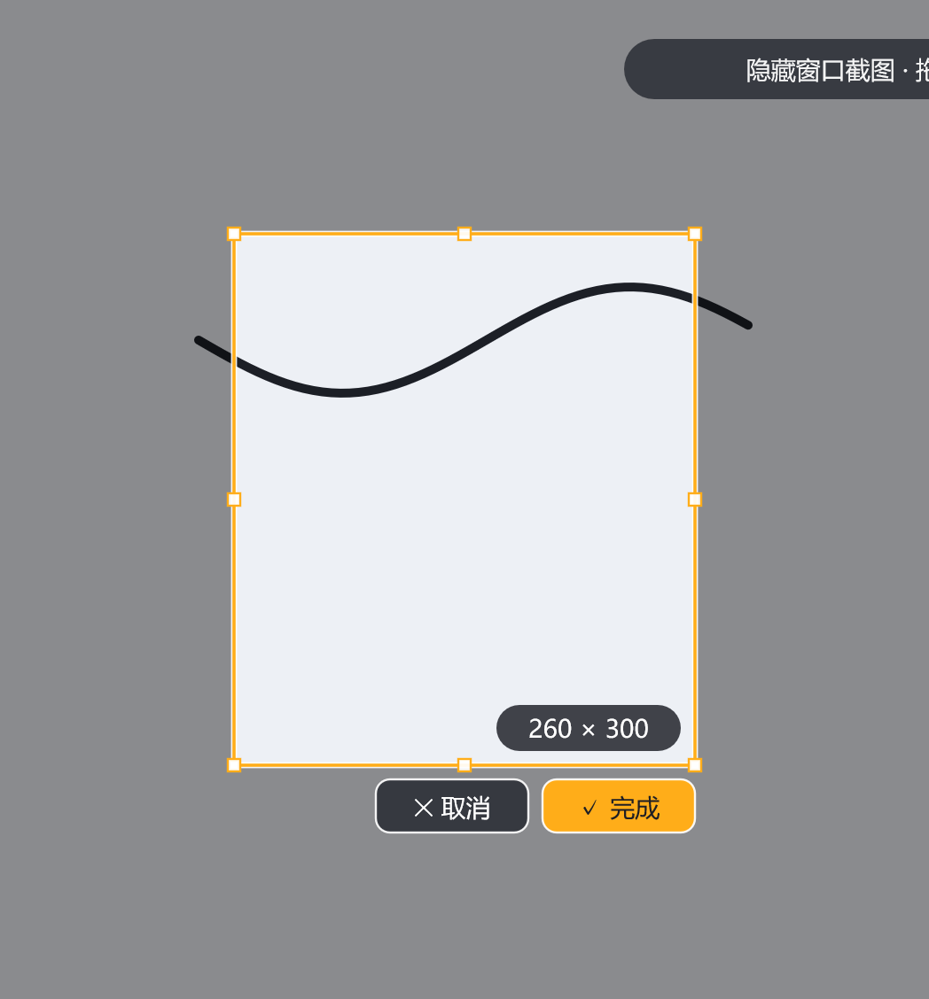

01色带：平时 6 像素，用时才长成设置条
工具选中后，头顶那条设置条不是一直摊着的，而是压成 6 像素一条色线；
鼠标碰到它，120ms 张开到 34 像素的完整设置条，移开等 450ms 才收——
"快出慢隐"，和 Windows 任务栏自动隐藏同一套手感。
压成线以后仍然可以直接点：12 个色片在 6 像素里照样点得到，不用"先展开再选"。
挑颜色是最高频动作，逼人走两步就等于不好用。

下：胶囊工具带 ｜ 上：色带展开后的设置条
收起：平时只是一条 6 像素色线，12 个色片照样点得到
02贴边隐藏：藏起来只剩一条 48 像素把手
把工具带拖到屏幕底边，它缩到只剩一条把手（长 48、厚 8，颜色就是当前笔色）。
48 不是随手定的：项目另一条规矩写着"48 是点得到的最小东西，触摸屏上也够"——
而藏起来的时候恰恰是最需要一次点中的时候，教室里没键盘，工具找不到是真问题。
贴边判定用"离屏幕底 ≤10 像素"，不是离任务栏上沿——所以默认位置不会误触发，
要收起来必须明确把面板拖到最底下。

露着是一个圆钮（左）→ 拖到屏幕底边隐藏后，只剩一条 48×8 的把手（右，颜色是当前笔色）
03呼出盘：按住一个全局键，划向扇区，松手切
Ctrl+Alt+Shift+Q（全局键，任何程序在前台都生效）：
按住不放，光标处浮出八扇面，划向要的工具或颜色，松手执行。
八扇区 ＝ 笔 / 黑 / 红 / 蓝 / 橡皮 / 框选 / 荧光笔 / 激光。
熟手不用等盘：出盘有 120ms 延迟，直接划走盘根本不闪。
开着穿透也能按——它是"把笔从下层抢回来"的入口：选一个扇区就退出穿透并切到它；
想继续用下面的程序就把鼠标松在盘心（只是取消，穿透不动）。
它不新增任何命令：扇区里的动作和工具键走完全同一条路。
呼出盘：八扇区 ＝ 笔 / 黑 / 红 / 蓝 / 橡皮 / 框选 / 荧光笔 / 激光
04穿透 + 全局键：能"过手"，也能"抢回来"
点一下「鼠标」那格（或全局 Ctrl+Alt+Shift+T）
鼠标就还给下层程序，可以正常去点 PPT。这时候想写字，不用去找工具带——
全局键直接把人拉回来：呼出盘换工具、穿透开关退出、退出程序同理。
三条全局键统一是 Ctrl+Alt+Shift+… 三层修饰，
就是为了不和别的软件撞车。
05停顿成图形：手写一笔，停住 0.4 秒
手写一个歪圆，笔尖停住约 400ms，它变成一个规整的圆；按住还能拖到位再松手。
直线、矩形、三角形、平行四边形同理。吸附和"用图形工具画直线"是同一套
（特殊角软吸附 ±1°、Shift 15° 硬网格、Alt 自由）。
0622 种图形与学科工具
直线 / 箭头 / 矩形 / 椭圆 / 圆 / 三角形 / 平行四边形 / 坐标系；
抛物线 / 双曲线 / 正弦 / 余弦 / 波浪线 / 正切；
圆柱 / 圆锥 / 圆台 / 球 / 棱柱 / 棱锥 / 棱台。
每个定义元素都是可以直接拖的手柄（端点、半轴、顶点、焦点、渐近线…），
拖的时候有特殊形状吸附（正方形、正圆、姿态角），并实时显示角度 / 半径 / 长度读数。

22 段图形，含圆锥曲线与立体图形

图形库总览：22 类，每一类都有多档变体（实线 / 虚线 / 点线、带网格 / 不带…）

学科图形：抛物线四种开口、双曲线、正弦 / 余弦 / 波浪线、正切，以及圆柱 / 圆锥 / 圆台 / 球
07PPT 逐页隔离：翻页只看这一页，每页都记得
进放映自动进入、退出自动回桌面页。每一页的墨迹完全隔离，页内还能滚动、
每页记住滚到哪；自动存 / 自动读，支持回放本页墨迹
（把这一页的书写过程重放一遍）。
连不上 PowerPoint / WPS 时零症状——不联动而已，不报错、不卡、不弹窗。
08选中 / 截图 / 剪贴板对象
点选 / 框选 / 套索，8 手柄 + 旋转（90° 软吸附）；小对象自动改用"最小操作框"，
手柄不压住内容。拖动旋转期间模型一个字不改，预览画在浮动层，松手才提交，一步撤销。
截图：冻结整屏 → 拖框 → 松开调整 → 原位落 + 自动选中 + 进剪贴板。
Ctrl+C 在同一次剪贴板会话里同时放对象字节和一张透明 PNG：
粘回批注仍是可编辑对象，粘到 Word / PPT / 微信是一张图。

截图取景：拖框、8 手柄调整